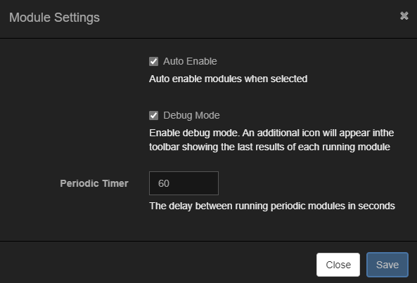
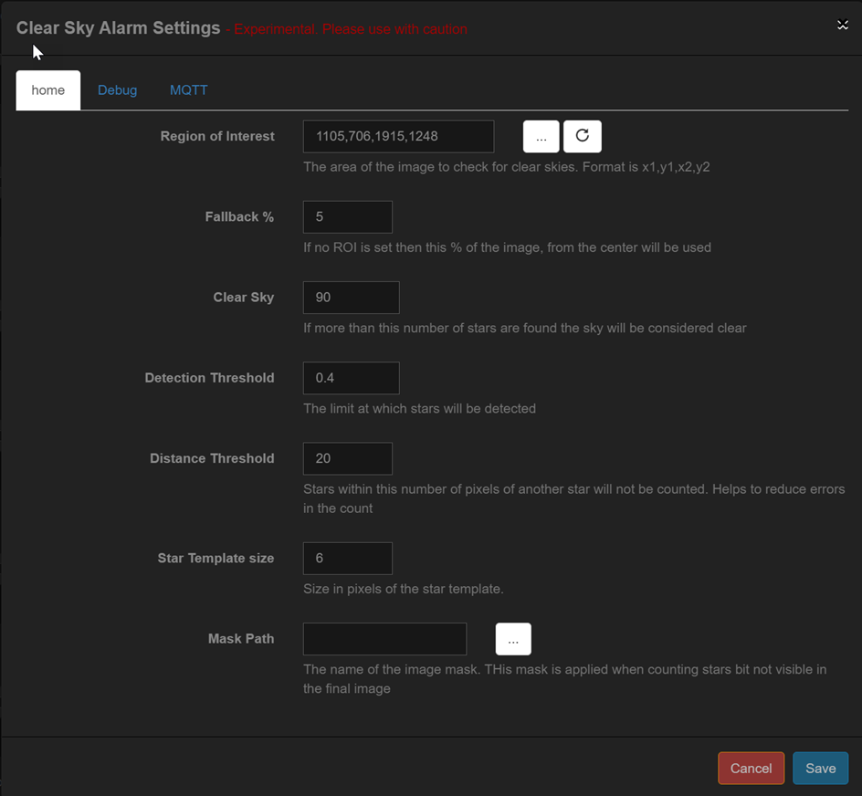
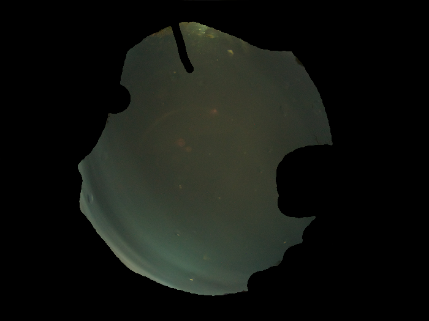

Modules can be used to enhance images created by Allsky. Different modules perform different tasks, and the Module Manager allows you to control which modules run and when.
There are two types of modules:
- Allsky Modules are developed and maintained by the Allsky team and are installed with Allsky.
- User Modules are developed and maintained
by other people and can optionally be installed
and deleted if no longer required.
User Modules should only be installed from the official user-modules repository using the directions listed there. Installing from other source can be dangerous.
- Some modules are shown as experimental. Before using these modules you should ensure that you are proficient in analysing Linux log files. Experimental modules can be unstable and as such may "break" Allsky.
- Some modules are designed to operate with external hardware, typically connected to the Pi's GPIO pins. Before attempting to use any of these modules make sure you have an understanding of interfacing hardware to the PI's GPIO.
Don't be discouraged by the above warnings - the module system is very flexible and allows you to customise Allsky without having to change any Allsky code.
Module Flows
Modules are run within Flows which determine when the modules run. Each flow can have a different list of modules that are run and the order in which they are run. The different flows are listed below.
The flows in which modules run are:
- Daytime Capture - Modules in this flow are run after every daytime image is captured and initially saved.
- Nighttime Capture - Modules in this flow are run after every nighttime image is captured and saved.
- Day to Night Transition - Modules in this flow are run when Allsky switches from Daytime to Nighttime capturing per the Latitude, Longitude, and Angle you've defined in the WebUI.
- Night to Day Transition - Modules in this flow are run when Allsky switches from Nighttime to Daytime capturing.
- Periodic jobs - Modules in this flow are run periodically and are not related to image capture. Each module defines how often it runs.
The diagram below shows each stage of the capture process and how modules fit into it.
The Module Manager
Modules are managed via the Module Manager.
| Annotation | Icon | Description |
|---|---|---|
| Save | This is enabled when any changes are made. | |
| Upload | This allows you to upload a zip file containing a new or updated module. Please see the section on uploading a modules for more details on how to use this feature. | |
| Flow | The flow you wish to manage. If you have unsaved changes from the current flow you will be prompted to save them before switching | |
| Settings | Displays the settings dialog for the Module Manager. | |
| Debug | Displays the debug data for modules. This icon is only visible if it's been enabled in the Module Options. | |
| Reset | Resets the selected flow to the installation default. | |
| Restore | Restores the flow to the last backup. This option is only be visible if there is a restore point available. |
Selecting a flow
From the drop down list select the flow that you wish to amend. If there are unsaved changes for the current flow then you will be prompted to save them before switching to a new flow. The current day/night flow will automatically be selected depending upon the current time of day.
Uploading a module
Please only upload modules from trusted sources. All modules uploaded are done so at your own risk.
To upload a module it must be in a zip file with the same name as the module. For example, if you have a module called allsk_test.py the zip file must be called allsky_test.zip.
Enabling a module
To enable a module drag it from the Available Modules column to the Selected Modules column and select the "Enabled" checkbox. The module will become active after the flow has been saved. You can set modules to be automatically enabled when dragging them to the Selected Modules column in the Module Editor Module Options.
Most modules require some configuration after they have been moved to the Selected Modules column. Clicking the Settings button will display any configuration options for the module.
Disabling a Module
There are two ways to disable a module:
- Drag the module to the Available Modules column - this will disable the module and lose any settings for it.
- Uncheck the "Enabled" checkbox - this will disable the module but retain any settings. This is the preferred method if you just wish to temporarily disable a module.
Setting the Module execution order
The modules are run in the order they appear in the Selected Modules column. To change the order simply drag the modules up or down the list. Modules highlighted in red can not be moved.
Module Manager Settings
|  |
|
Modules
Modules form the heart of the module manager and there is a wide variety available. In this section each module is described in details along with all of the available settings.
Allsky Modules
The Allsky Modules are installed along with the main Allsky installer. The available modules are:
Load Image module
| Available in Flows | Description |
|---|---|
|
Loads the last image taken by Allsky. This is always the first module that is run during the Daytime and Nighttime Capture flows to ensure that the image is available to all subsequent modules. It is therefore not possible to move or remove it. This module is enabled by default so there is no need to install it. |
Save Image module
| Available in Flows | Description |
|---|---|
|
Saves the final image after all of the modules have run. This is always the last module run so it is not possible to move or remove it. This module is enabled by default so there is no need to install it. |
Mask Image module
| Available in Flows | Description |
|---|---|
|
This applies a mask to the image. This can be useful if there are artefacts outside of the image created by the lens that you wish to remove. Create a mask with pure white in the areas you wish to keep and black in the areas you wish to be black. See the section on creating and using masks below. |
Clear Sky module
| Available in Flows | Description |
|---|---|
|
This attempts to determine if the sky is clear. It does this by counting the stars in a Region of Interest (ROI) and if this is above a threshold the sky is assumed to be clear. The module's settings allow you to specify the ROI on the image and the parameters for detecting stars. If required the current calculated sky state can be sent to an MQTT broker. Certain other modules can also use the results of this module. For example the Star Count module can be set to only run if the sky is clear, as determined by this module. It is recommended to run this module early in the flow, generally after the Mask Image module. |
|  |
|
 |
|
These options are for debugging and should not be used for normal operation:
|
This is an advanced option and requires an MQTT broker. The setup and operation of a broker is beyond the scope of this document.
|
Star Count module
| Available in Flows | Description |
|---|---|
|
This counts stars in the captured Allsky Image. Stars are counted by using a template that looks like a star and attempts to locate anything in the image that looks like it. This works well when the image is well exposed and masked to remove any areas that do not contain stars (e.g., buildings, trees, etc.) You will need to experiment with the detection values to get the best results. Annotating the stars in the image can be very helpful. The Moon can also cause issues. This module is experimental and as such may produce erroneous results. |
 |
|
 |
|
These options are for debugging and should not be used for normal operation:
|
Meteor Detection module
| Available in Flows | Description |
|---|---|
|
This attempts to detect any meteors in the image. The detection method looks for hard edges in an image and thus is susceptible to false positives if the image is not masked to hide anything that isn't sky. You will need to experiment with the detection values to get the best results. Annotating the meteors in the image can be very helpful. The Moon can also cause issues. This module is experimental and as such may produce erroneous results. |
 |
|
|
These options are for debugging and should not be used for normal operation:
|
Export module
| Available in Flows | Description |
|---|---|
|
Exports all Allsky variables to a json file.
By default all environment variables prefixed with
|
 |
|
Overlay module
| Available in Flows | Description |
|---|---|
|
Overlays data on the captured image. This module applies the fields defined in the Overlay Editor. Typically the overlay module will run towards if not at the end of the flow. This will allow it access to other variables created by modules. |
Script module
| Available in Flows | Description |
|---|---|
|
This allows a script to be run. This should only be used by users that understand how scripts are developed/run on Linux. Extreme care must be taken when using this module as it could cause Allsky to stop operating. |
 |
|
Save Image Data module
| Available in Flows | Description |
|---|---|
|
This module writes image related data to a database allowing it to be graphed in the WebUI. |
User Modules
You must manually install User Modules from a separate GitHub repository.
Cloud Cover module
| Available in Flows | Description |
|---|---|
|
This module requires external hardware for its operation. This module uses an MLX90614 to determine the amount of cloud cover. The MLX90614 is a non-contact Infra Red thermometer. It is used to measure the temperature of the sky and compare it to the ambient temperature. Generally the difference between the Sky temperature and ambient can be used to determine the amount of clouds. The exact theory for the calculations is beyond the scope of this documentation. Two different methods are available for determining the cloud cover:
|
 |
|
Between the two above temperatures the sky is assumed to be partially cloudy. |
Details of the formulae used can be found on the lunaticoastro website. Setting these values requires a lot of experimentation. |
 |
|
A typical connection diagram for a Cloud Cover sensor. As mentioned above the process of detecting clouds is not simple. The basic principle is to measure the difference between the ambient temperature and the sky temperature. The ambient is fairly easy to measure but the sky temperature presents some problems:
The moisture problem is a little more difficult to solve and the best solution is to mount the sensor horizontally and use a reflective surface to reflect the sky onto the sensor. This allows the sensor to stay dry. Several environment variables are created that can be used in the Overlay Manager:
|
Dew Heater module
| Available in Flows | Description |
|---|---|
|
This module requires external hardware for its operation. This module allows you to control a digital GPIO pin that can in turn be used to drive a dew heater. The GPIO pin cannot directly drive the heater, instead it must be used to drive some form of switch or relay / transistor etc. to control the heater. The electronics to do this are beyond the scope of this documentation. Some form of sensor is required to obtain the current temperature and humidity. The module supports the most common form of sensors available on the market as of 2024. |
|
|
 |
|
 |
|
A typical connection diagram for a dew heater. In this example an SHT31 sensor is being used to provide the temperature and humidity data. The module will then determine if the heater is required and enable the relevant GPIO pin - 20 in this case. Driving relays directly from the Pi's GPIO pins can be problematic and cause damage to your Pi. If you are using a module then please ensure it has a snubber and is optically isolated. Please check the Raspberry Pi FAQ for more details. Several environment variables are created that can be used in the Overlay Manager:
|
GPIO module
| Available in Flows | Description |
|---|---|
|
This module requires external hardware for its operation. This module allows a GPIO pin's state to be set on the transitions between day/night and night/day. This could for example be used to trigger some external electronics to cover and uncover the camera to protect it from direct sunlight in very warm climates. |
 |
|
Discord module
| Available in Flows | Description |
|---|---|
|
This module requires configuration in Discord. This module allows images to be sent to Discord channels. The following images can be sent to Discord:
Discord implements a rate limit on the API but it is very unlikely that you will hit any of the limits. You will need to create Webhooks in your Discord server. These can be created from the server settings as shown below: |
 |
|
| These settings are the same as for Day Time. |
|
|
 |
Discord implements a limit of 8 MB for any posted item. It's possible that the timelapse videos may exceed this rate so if you wish to send them to Discord you will have to configure Allsky to ensure that the video is less than 8 MB. The module will check before sending the file and if it exceeds the Discord limit it will not be sent and an error logged in the allsky log file. |
Rain module
| Available in Flows | Description |
|---|---|
|
This module requires external hardware. This module uses an external sensor to detect rain. There are various cheap sensors available to detect rain that either provide an analog or digital output. This module only supports sensors with a digital output. |
|
|
A typical connection diagram for rain detection using a cheap rain detection module. These cheap sensors work but the contact boards suffer badly from corrosion. A much better module is described here. Whilst more expensive and requiring a 12 volt supply, this is a far superior rain and snow detector. Two environment variables are created that can be used in other modules or the Overlay Manager:
|
Open Weather Map module
| Available in Flows | Description |
|---|---|
|
This module reads weather data from the free Open Weather Map API. To use this module you need to signup for a free API key on the openweathermap website. The location used for the weather is your Latitude and Longitude. The free tier of the API is limited to 1000 calls per day so you will need to configure the settings appropriately. Reading the data every 10 minutes is more than frequent enough and will ensure you do not exceed the API limit. Several environment variables are created that can be used in the Overlay Manager:
|
|
GPS module
| Available in Flows | Description |
|---|---|
|
This module was developed for those that use their allsky cameras in mobile locations. It was developed to allow the Pi's location and clock to be set from the GPS data. This module requires a GPS connected to the Pi that can be managed by gpsd. NOTE: The HDMI and Wifi on the Pi 4 is VERY noisy and will interfere with most GPS modules. To get around this please ensure that the GPS receiver and antenna is mounted at least one meter (three feet) away from the Pi. Time synchronisationEven if you set the time sync options in the
GPS module the time will only be synchronised if the
Pi is NOT having its time updated from the Internet.
To test if the time is currently being synchronised
fom the Internet enter the following command:
Output similar to the following will be produced: Local time: Fri 2023-02-03 23:18:36 GMT Universal time: Fri 2023-02-03 23:18:36 UTC RTC time: n/a Time zone: Europe/London (GMT, +0000) System clock synchronized: no NTP service: inactive RTC in local TZ: no Note that the "System clock synchronized" value is "no" which means the GPS module will be allowed to set the time. Several environment variables are created that can be used in the Overlay Manager:
|
|
|
| A typical setup with a GPS connected to a Pi. |
PI Status module
| Available in Flows | Description | ||||||||||||||||||||
|---|---|---|---|---|---|---|---|---|---|---|---|---|---|---|---|---|---|---|---|---|---|
|
This module reads information about the Pi and makes it availbale for use in the Overlay Manager. Several environment variables are created that can be used in the Overlay Manager:
Several other variables are also available and are mainly related to clock frequencies and voltages. Tstat bitsThese values are text and either "true" or "false":
|
|
Creating and Using Masks
Several modules can make use of masks, which are used to "hide" areas of the image to improve the final image. For example, the Star Count module can use a mask to hide all areas of the image that may contain things that will confuse the star detection algorithm, such as local light pollution like a far away street light.
Masks must be created in image editing software such as Gimp or Photoshop. There are no tools available within Allsky to create masks.
Masks can also be used to clean up or hide parts of the image like buildings, trees, or anything not created by the lens.
{kind=link}
{kind=link}
Masks are also used to hide areas of the image for some modules like Star Count. This prevents false positives. Consider the following example of another raw image from the camera.
|
There is a lot of non-sky in the image like houses, trees, etc. These items can cause some detection modules to get confused so by masking them they will not be included in any of the calculations. |
|
|
This mask hides areas of the image that are not sky. Since this mask is being used to mask specific areas of the image, if the camera is moved then the mask may have to be recreated. |
|
|
After the mask has been applied the resulting image will allow the various modules to process the image more effectively. |
 |
{kind=link}
{kind=link}
{kind=link}
Some modules will apply the mask but it will not be used for the final image. Examples of this are masks used to mask the image for star/meteor detection.
Masks do not have to be circular, they can be any shape you like. In fact the masks used for star and meteor detection are very likely to be a strange shape.
GPIO
Several of the modules require the selection of a GPIO pin on the pi. The module editor has an inbuilt GPIO selector to help ease the process of selecting the required pin.
|
When clicking on the GPIO selection the GPIO selector is displayed allowing you to select the required pin. In this example GPIO27 is currently selected. Currently only the PI 3/4/5 GPIO pins are implemented. |
 |
Module Performance / Debugging
It's important that modules do not take too much time to run as this will cause load issues on the Pi.
After Allsky has taken an image an initial copy is saved and processed in the background, including running the relevant module flow. It's important that this process finishes before the next image is saved. If the module flow takes too long multiple save image processes will be running, and will start to cause performance issues on the Pi.
TIP - When installing a new module ensure debug mode is enabled in the Module Manager Module Options and monitor how long the new module is taking and what effect it's having on the overall flow time.
The Module Manager Debug Window
 |
|
The debug dialog box shows each of the enabled modules, how long they took to run, the result of the last run, and the total execution time for all modules. This information is useful if you find there are too many save image processes running or for determining if any particular module is causing an issue. |
The Allsky debug log
The main Allsky debug log will contain information from the module processor. The amount of information logged depends upon the main Allsky Debug Level setting - when 0 only critical module errors are logged. Any other log level will display verbose information as shown below.
Periodic module output is logged to the allskyperiodic.log file. This file will be in the same location as the main Allsky log file, typically /var/log.
Oct 23 21:08:15 allsky allsky.sh[24948]: INFO: Loading config... Oct 23 21:08:15 allsky allsky.sh[24948]: INFO: Loading recipe... Oct 23 21:08:15 allsky allsky.sh[24948]: INFO: -------- Running Module allsky_loadimage.py -------- Oct 23 21:08:15 allsky allsky.sh[24948]: INFO: Attempting to load allsky_loadimage Oct 23 21:08:15 allsky allsky.sh[24948]: INFO: Image /home/alex/allsky/tmp/image-20221023210636.jpg Loaded Oct 23 21:08:15 allsky allsky.sh[24948]: INFO: Module allsky_loadimage.py ran ok in 0.493601s Oct 23 21:08:15 allsky allsky.sh[24948]: INFO: -------- Running Module allsky_pistatus.py -------- Oct 23 21:08:15 allsky allsky.sh[24948]: INFO: Attempting to load allsky_pistatus Oct 23 21:08:15 allsky allsky.sh[24948]: INFO: Module allsky_pistatus.py ran ok in 0.041586s Oct 23 21:08:15 allsky allsky.sh[24948]: INFO: -------- Running Module allsky_saveintermediateimage.py -------- Oct 23 21:08:15 allsky allsky.sh[24948]: INFO: Attempting to load allsky_saveintermediateimage Oct 23 21:08:15 allsky allsky.sh[24948]: /home/alex/allsky/images/20221023-clean Oct 23 21:08:15 allsky allsky.sh[24948]: INFO: Image /home/alex/allsky/images/20221023-clean/image-20221023210636.jpg Saved Oct 23 21:08:15 allsky allsky.sh[24948]: INFO: Module allsky_saveintermediateimage.py ran ok in 0.442361s Oct 23 21:08:15 allsky allsky.sh[24948]: INFO: -------- Running Module allsky_clearsky.py -------- Oct 23 21:08:15 allsky allsky.sh[24948]: INFO: Attempting to load allsky_clearsky Oct 23 21:08:15 allsky allsky.sh[24948]: INFO: Created star template. Radius - 6 Oct 23 21:08:15 allsky allsky.sh[24948]: INFO: Sky is NOT clear. 5 Stars found, clear limit is 40 Oct 23 21:08:15 allsky allsky.sh[24948]: INFO: MQTT disabled Oct 23 21:08:15 allsky allsky.sh[24948]: INFO: Module allsky_clearsky.py ran ok in 0.677157s Oct 23 21:08:15 allsky allsky.sh[24948]: INFO: -------- Running Module allsky_starcount.py -------- Oct 23 21:08:15 allsky allsky.sh[24948]: INFO: Attempting to load allsky_starcount Oct 23 21:08:15 allsky allsky.sh[24948]: INFO: Sky is not clear so ignoring starcount Oct 23 21:08:15 allsky allsky.sh[24948]: INFO: Module allsky_starcount.py ran ok in 9.8e-05s Oct 23 21:08:15 allsky allsky.sh[24948]: INFO: -------- Running Module allsky_meteor.py -------- Oct 23 21:08:15 allsky allsky.sh[24948]: INFO: Attempting to load allsky_meteor Oct 23 21:08:15 allsky allsky.sh[24948]: INFO: Sky is not clear so ignoring meteor detection Oct 23 21:08:15 allsky allsky.sh[24948]: INFO: Module allsky_meteor.py ran ok in 6.8e-05sv Oct 23 21:08:15 allsky allsky.sh[24948]: INFO: -------- Running Module allsky_dewheater.py --- Oct 23 21:08:15 allsky allsky.sh[24948]: INFO: Attempting to load allsky_dewheater Oct 23 21:08:15 allsky allsky.sh[24948]: INFO: Turning Heater on Oct 23 21:08:15 allsky allsky.sh[24948]: INFO: Temperature within limit temperature 11.13, limit 10, dewPoint 8.74 Oct 23 21:08:15 allsky allsky.sh[24948]: INFO: Sensor SHT31 read. Temperature 11.13 Humidity 85.19 Dew Point 8.74 Heat Index -14.47 Oct 23 21:08:15 allsky allsky.sh[24948]: INFO: Module allsky_dewheater.py ran ok in 0.040973s Oct 23 21:08:15 allsky allsky.sh[24948]: INFO: -------- Running Module allsky_maskimage.py -------- Oct 23 21:08:15 allsky allsky.sh[24948]: INFO: Attempting to load allsky_maskimage Oct 23 21:08:15 allsky allsky.sh[24948]: INFO: Module allsky_maskimage.py ran ok in 0.516113s Oct 23 21:08:15 allsky allsky.sh[24948]: INFO: -------- Running Module allsky_cloud.py -------- Oct 23 21:08:15 allsky allsky.sh[24948]: INFO: Attempting to load allsky_cloud Oct 23 21:08:15 allsky allsky.sh[24948]: INFO: Cloud state - Cloudy 100.0. Sky Temp 10.370000000000005, Ambient 10.450000000000045 Oct 23 21:08:15 allsky allsky.sh[24948]: INFO: Module allsky_cloud.py ran ok in 0.002392s Oct 23 21:08:15 allsky allsky.sh[24948]: INFO: -------- Running Module allsky_export.py -------- Oct 23 21:08:15 allsky allsky.sh[24948]: INFO: Attempting to load allsky_export Oct 23 21:08:15 allsky allsky.sh[24948]: INFO: Allsky data exported to /home/alex/allsky/tmp/allskydata.json Oct 23 21:08:15 allsky allsky.sh[24948]: INFO: Module allsky_export.py ran ok in 0.001127s Oct 23 21:08:15 allsky allsky.sh[24948]: INFO: -------- Running Module allsky_overlay.py -------- Oct 23 21:08:15 allsky allsky.sh[24948]: INFO: Attempting to load allsky_overlay Oct 23 21:08:15 allsky allsky.sh[24948]: INFO: Config file set to /home/alex/allsky/config/overlay.json Oct 23 21:08:15 allsky allsky.sh[24948]: INFO: Loading Config took 0.00063 Seconds. Elapsed Time 0.000662 Seconds. Oct 23 21:08:16 allsky allsky.sh[24948]: INFO: Adding Text Fields took 0.255803 Seconds. Elapsed Time 0.685933 Seconds. Oct 23 21:08:16 allsky allsky.sh[24948]: INFO: Adding Image Fields took 0.248668 Seconds. Elapsed Time 0.934638 Seconds. Oct 23 21:08:16 allsky allsky.sh[24948]: INFO: Saving Final Image took 0.006398 Seconds. Elapsed Time 0.941075 Seconds. Oct 23 21:08:16 allsky allsky.sh[24948]: INFO: Writing debug data took 4.5e-05 Seconds. Elapsed Time 0.941138 Seconds. Oct 23 21:08:16 allsky allsky.sh[24948]: INFO: Debug information written to /home/alex/allsky/tmp/overlaydebug.txt Oct 23 21:08:16 allsky allsky.sh[24948]: INFO: Annotation Complete Elapsed Time 0.942793 Seconds. Oct 23 21:08:16 allsky allsky.sh[24948]: INFO: Module allsky_overlay.py ran ok in 0.951637s Oct 23 21:08:16 allsky allsky.sh[24948]: INFO: -------- Running Module allsky_savedetails.py -------- Oct 23 21:08:16 allsky allsky.sh[24948]: INFO: Attempting to load allsky_savedetails Oct 23 21:08:16 allsky allsky.sh[24948]: INFO: Module allsky_savedetails.py ran ok in 0.128938s Oct 23 21:08:16 allsky allsky.sh[24948]: INFO: -------- Running Module allsky_saveimage.py -------- Oct 23 21:08:16 allsky allsky.sh[24948]: INFO: Attempting to load allsky_saveimage Oct 23 21:08:16 allsky allsky.sh[24948]: INFO: Image /home/alex/allsky/tmp/image-20221023210636.jpg Saved, quality 100 Oct 23 21:08:16 allsky allsky.sh[24948]: INFO: Module allsky_saveimage.py ran ok in 0.388242s
Developing Custom Modules
The module system is designed to be extended by developing custom modules.
Personal modules should be saved in the ~/allsky/config/myFiles/modules directory which you must create (mkdir -p ~/allsky/config/myFiles/modules).
This directory is automatically propogated to new Allsky releases.
Python Versions
Modules are developed in Python and should use the latest version available for the Pi. It should be noted that whilst multiple versions of Python can be installed on a Pi it's best just to use the version that ships with the OS. Generally that may mean reinstalling your Allsky installation to get the latest version of python. Running multiple versions of python is beyond the scope of this documentation.
Contributing a module
There is a central GitHub repository that you can contribute your modules to. You do not have to do this but over time we would like to build this into a comprehensive library of available modules.
If you wish to contribute your module then please:
- Create a fork of the User Modules repository from https://github.com/AllskyTeam/allsky-modules.
- Create a new branch in your forked repository, calling the branch the name of your module.
- Develop your module and commit it to the branch.
- Create a pull request into the allsky-modules repo from your branch.
- The module will be checked and if all is ok will be merged into the main repository.
- If you need to make changes to the module after it's been merged then refork the main repo, create a branch from the master branch named as your module, then commit a PR to main master.
The structure of a module is important so please use the following folder/file structure.
allsky_MODULENAME
- allsky_MODULENAME.py - The main modules code.
- requirements.txt -
Any python packages required by the plugin,
will be installed with
pip3. If you don't need any additional packages don't include this file. - packages.txt -
Any aditional libraries required by the module,
will be installed using
apt. If you don't need any additional packages don't include this file. - README.md - Markdown file with any special instructions required for the module. If there are none do not include this file.
When specifying python libraries DO NOT include numpy in ANY requirements.txt file as changing the version could cause issues with Allsky.
Anatomy Of A Module
A module consists of two key parts:
- The metadata variable defines everything the Module Manager needs to run the module. This includes basic information about the module and the configuration options it requires.
- The module entry point is the main function that is called by the Module Manager.
Every module MUST import the allsky_shared module. This module is used to pass data from the flow processor to each module.
The Meta Data Variable
Please refer to the Boiler Plate example module for more details on this variable. That example includes all of the available options.
| Field | Type | Mandatory | Description |
|---|---|---|---|
| name | String | Yes | The name of the module. This field is displayed as the heading for a module when it's displayed in the Module Manager. |
| description | String | Yes | The description of the module. This field is displayed in the Module Manager. |
| module | String | Yes | The module name. MUST be in the format allsky_{module name} i.e., allsky_boilerplate. |
| version | String | No | The version of the module. If this field is not present then the version of the main Allsky software will be used. |
| enabled | String | No | "true" or "false". If set to true the module is enabled, handy for setting its initial state. NOTE: If the option to auto enable modules is enabled in the Module Manager then this will take priority over that value. |
| events | Dictionary | Yes | A list of the flows the module should be displayed in,
one or more of:
|
| experimental | String | No | "true" or "false". If set to true a warning is displayed in the Module Manager indicating the module is experimental. |
| arguments | Dictionary | No | A list of the values that will be passed to the main processing method of the module in the params array. This exists to allow you to specify defaults for the fields. Definitions for the fields are defined in the argumentdetails field below. |
| argumentdetails | Dictionary | No | Dictionary of definitions for each of the arguments. |
| businfo | string | No | Set to i2c if the module uses the i2c bus. |
| changelog | Dictionary | Yes | Changelog information for the module, see below. |
The argumentdetails Dictionary
A module may require that the user can set values for its paramaters. This is implemented via the "arguments" and "argumentdetails" sections. If there are any argumentdetails present then a settings option will be displayed in the Module Manager. Clicking on the setting's option displays a dialog allowing the module's settings to be changed. The dialog is created automatically from the options defined in the "argumentdetails" section.
| Field | Type | Mandatory | Description |
|---|---|---|---|
| required | String | Yes | "true" or "false". If set to true the field is required. NOTE: This will be implemented in a future release. |
| description | String | Yes | This is the label for the field in the module settings dialog. |
| help | String | No | This is the help text for the field in the module settings dialog. |
| tab | String | No | The tab to display the field in. If left blank the field will be displayed on the 'Home' tab. This is handy for grouping fields into seperate tabs. |
| type | Dictionary | No | A Dictionary defining the type of field. The key is the name of the field, the same name as used in the arguments section. If no type is defined the field is assumed to be a text field. |
Available field types
If blank the field is assumed to be a text entry field.
| fieldtype | Description | Additional paramaters |
|---|---|---|
| select | A drop down list from which the user can select an option. |
|
| checkbox | A checkbox allowing the entry of a true or false value. | None |
| spinner | A numerical entry field with up and down controls to alter the value. |
|
| gpio | Displays a dialog allowing the user to select a GPIO pin on the Pi. This field type is useful when developing a module that requries a user to select a GPIO pin. | None |
| image | Displays a dialog allowing the user to select/upload an image. This is useful where a module may require the user to select a mask. | None |
| roi | Displays a dialog allowing the user to select a Region Of Interest (ROI) from the captured image. | None |
The changelog Dictionary
A simple example with a single change, one change for the revision:
"v1.0.0" : [
{
"author": "Alex Greenland",
"authorurl": "https://github.com/allskyteam",
"changes": "Initial Release"
}
],
A slightly more complex change, multiple changes for a single revision:
"v1.0.1" : [
{
"author": "Damian Grocholski (Mr-Groch)",
"authorurl": "https://github.com/Mr-Groch",
"changes": [
"Added extra pin that is triggered with heater pin",
"Fixed dhtxxdelay (was not implemented)",
"Fixed max heater time (was not implemented)"
]
}
],
A change with multiple authors, not the change can be an array as in the above example:
"v1.0.4" : [
{
"author": "Alex Greenland",
"authorurl": "https://github.com/allskyteam",
"changes": "Add AHTx0 i2c sensor"
},
{
"author": "Andreas Schminder",
"authorurl": "https://github.com/Adler6907",
"changes": "Added Solo Cloudwatcher"
}
],
Complete metadata example
This is a full example of all of the possible options available in the metaData dictionary. This example can be found in the boilerplate module in the additional modules repository on GitHub.
metaData = {
"name": "All Sky Boilerplate",
"description": "Example module for AllSky",
"module": "allsky_boilerplate",
"version": "v1.0.0",
"events": [
"day",
"night",
"endofnight",
"daynight",
"nightday",
"periodic"
],
"experimental": "false",
"arguments":{
"textfield": "",
"select": "value1",
"checkbox": "",
"number": "10",
"gpio": "",
"image": "",
"roi": ""
},
"argumentdetails": {
"textfield": {
"required": "true",
"description": "Text Field",
"help": "Example help for the text field",
"tab": "Field Types"
},
"select" : {
"required": "false",
"description": "Select Field",
"help": "Example help for a select field",
"tab": "Field Types",
"type": {
"fieldtype": "select",
"values": "None,value1,value2,value3"
}
},
"checkbox" : {
"required": "false",
"description": "Checkbox Field",
"help": "Example help for the checkbox field",
"tab": "Field Types",
"type": {
"fieldtype": "checkbox"
}
},
"number" : {
"required": "true",
"description": "Number Field",
"help": "Example help for the number field",
"tab": "Field Types",
"type": {
"fieldtype": "spinner",
"min": 0,
"max": 1000,
"step": 1
}
},
"gpio": {
"required": "true",
"description": "GPIO Field",
"help": "Example help for the GPIO field",
"tab": "Field Types",
"type": {
"fieldtype": "gpio"
}
},
"image" : {
"required": "false",
"description": "Image Field",
"help": "Example help for the image field",
"tab": "Field Types",
"type": {
"fieldtype": "image"
}
},
"roi": {
"required": "true",
"description": "Region of Interest field",
"help": "Help for the region of interest field",
"tab": "Field Types",
"type": {
"fieldtype": "roi"
}
},
"textfield1": {
"required": "true",
"description": "Text Field1",
"help": "Example help for the text field in a new tab",
"tab": "Another Tab"
}
},
"enabled": "false",
"changelog": {
"v1.0.0" : [
{
"author": "Alex Greenland",
"authorurl": "https://github.com/allskyteam",
"changes": "Initial Release"
}
],
"v1.0.1" : [
{
"author": "Alex Greenland",
"authorurl": "https://github.com/Mr-Groch",
"changes": [
"Change 1",
"Change 2"
]
}
],
"v1.0.2" : [
{
"author": "Alex Greenland",
"authorurl": "https://github.com/allskyteam",
"changes": [
"Change 1",
"Change 2"
]
},
{
"author": "Andreas Schminder",
"authorurl": "https://github.com/Adler6907",
"changes": "Change 1"
}
]
},
"businfo": [
"i2c"
],
"changelog": {
"v1.0.0" : [
{
"author": "Alex Greenland",
"authorurl": "https://github.com/allskyteam",
"changes": "Initial Release"
}
],
"v1.0.1" : [
{
"author": "Alex Greenland",
"authorurl": "https://github.com/allskyteam",
"changes": [
"Change 1",
"Change 2",
"Change 3"
]
}
],
"v1.0.2" : [
{
"author": "Alex Greenland",
"authorurl": "https://github.com/allskyteam",
"changes": "Change 1"
},
{
"author": "John Doe",
"authorurl": "https://github.com/allskyteam",
"changes": [
"Change 1",
"Change 2",
"Change 3"
]
}
]
}
}
|
The Allsky Shared module
To improve the performance of modules a common shared module called allsky_shared is used. It contains both helper functions and data from the main capture process. The module exists so that each individual module does not have to perform tasks like loading an image.
Allsky Shared module data
| Variable | Description |
|---|---|
| args | The arguments passed to the module processor (not normally needed). |
| LOGLEVEL | The Allsky Debug Level (not normally needed). |
| CURRENTIMAGEPATH | The full path to the current image (not normally needed, not available in daynight, nightday or periodic). |
| TOD | The time of day not available in daynight, nightday or periodic). |
| fullFilename | The final image filename i.e. image.jpg not available in daynight, nightday or periodic). |
| image | a numpy array of the current image - use this for any processing of the captured image. DO NOT attempt to load the image from disk within a module as this will have a severe performance impact on the module. Not available in daynight, nightday or periodic). |
Allsky Shared module helpers
| Function | Description |
|---|---|
| log(level, message) | Logs an entry to the allsky log file if the Debug Level is above "level". Errors are always logged. When a module needs to write to a log it should use this function rather than write to any log files directly. This function will ensure that the log message appears in the main Allsky log file. |
| getEnvironmentVariable(name, fatal=False, error='') | Gets an environment variable, can terminate if needed by setting the fatal variable and an error code. |
| var_dump(variable) | Pretty dump of a variable. This is handy for debugging modules. The output will appear in the main Allsky log file. |
| getSetting(settingName) | Gets a setting from the camera settings file. |
| writeDebugImage(module, fileName, image) | Writes a debug image to the ${ALLSKY_TMP}/debug/{module} folder. This can be useful when debugging a module to check the output at various stages. |
| startModuleDebug(module) | Creates the debug directories for a module. |
| convertPath(path) | Replaces Allsky variables in a string and is useful if a module enters a directory based upon any of the Allsky variables. For example, ${ALLSKY_TMP}/allskydata.json will have the ${ALLSKY_TMP} variable replaced with its real path. This function can be used to replace any of the Allsky variables in a string. |
| checkAndCreatePath(filePath) | Checks if the passed file exists and if not creates it. |
| checkAndCreateDirectory(filePath) | Checks if the passed directory exists and if not creates it. |
| raining() | Only available if the Rain module is being used - returns a boolean flags to indicate the rain state. |
| convertLatLon(input) | Converts the string "52.2S" to decimal -52.2. |
| setLastRun(module) | Sets the last run time for a module. Useful for where a module only needs to run periodically. |
| shouldRun(module, period) | Determines if a module should run based on the period. |
| dbAdd(key, value) | Adds the key/value pair to the internal database. |
| dbUpdate(key, value) | Updates the key/value pair in the internal database. |
| isFileWriteable(fileName) | Determines if the file is writeable. |
| isFileReadable(fileName) | Determines if the file is readable. |
| saveExtraData(fileName, extraData) | Saves the extraData in fileName. |
| deleteExtraData(fileName) | Deletes the extra data fileName. |
| getGPIOPin(pin) | Returns the board.Pin from the passed in pin (int). |
| createTempDir(path) | Creates a temporary directory. |
| cleanupModule(moduleData) | Removes any files or environment variables for a module. |